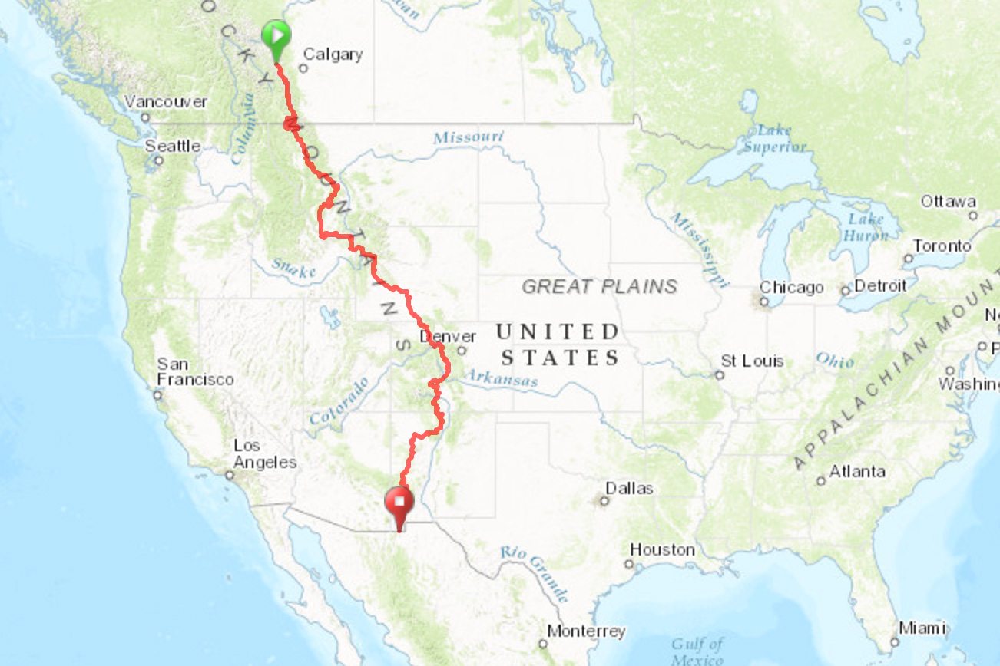

The Great Divide Mountain Bike Route (GDMBR) is the most recognized and important off-pavement cycling route in the United States, if not the world. The route crisscrosses the Continental Divide from north to south starting in Banff, Alberta, Canada and finishing at the US/Mexico border in Antelope Wells, New Mexico.

Distance 2,696 Miles or 4,339 KM
Days 37
Unpaved 90%
Single Track 3%
Difficulty(1-10) 5.5
Rideable 100%
Total Ascent 149,444'or 45,615 M
High Point 11,913' or 3,631 M
When: It starts June 8,2018 at 8:00 a.m. and continues all summer long.
Cost: Free. That's right free, just your blood, sweat and tears.
Where: Banff, Alberta Canada
Who: Any determined cyclist may challenge the Great Divide Route at any time, in either direction, to qualify for the Tour Divide(TD)General Classification(GC).